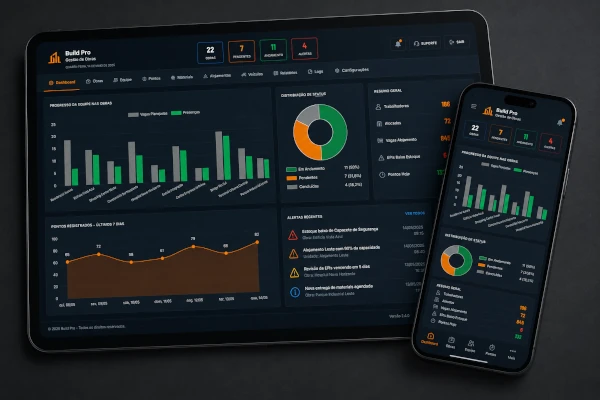
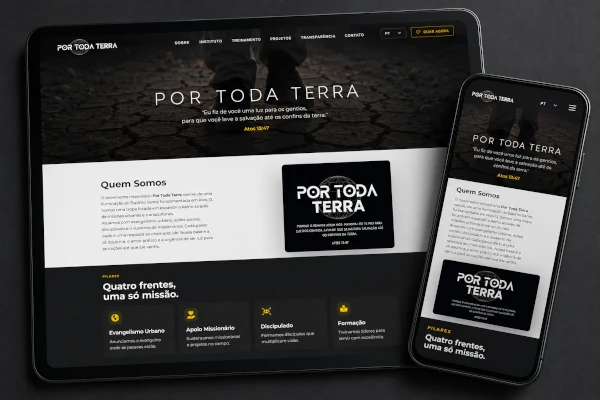
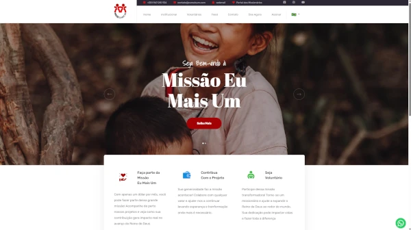

Elimine planilhas, tarefas manuais e operações desorganizadas. Desenvolvemos sistemas personalizados que centralizam informações, automatizam processos e dão total controlo sobre a sua empresa.
Infraestruturas robustas que não caem, não travam e escalam conforme a sua empresa cresce.
Mapeamos os processos da sua empresa e transformamos tarefas manuais, planilhas dispersas e controles paralelos em um sistema centralizado, seguro e totalmente personalizado.
Corrigimos gargalos, eliminamos limitações e evoluímos sistemas já existentes para acompanhar o crescimento da sua operação.
Vendemos controle, productivity e escalabilidade.
O software é apenas a ferramenta que utilizamos para transformar processos empresariais em operações mais rápidas, organizadas e lucrativas.

Transformamos o controle de equipes, alojamentos, materiais e produtividade em um único sistema corporativo de alta performance.

Desenvolvimento de um ecossistema global para engajamento, mapeamento de expedições e captação segura de recursos para missões humanitárias.

Migração, redesenho e hospedagem gerenciada e resiliência contra picos repentinos de tráfego durante campanhas nacionais.
Eliminamos tarefas repetitivas e reduzimos o esforço operacional da equipa.
Todos os dados da empresa organizados num único local.
Sistemas preparados para acompanhar a evolução da empresa sem criar novos gargalos.
Analisamos os processos da sua empresa e identificamos oportunidades de automação, redução de custos e ganho de produtividade.
Fluxos internos, tarefas manuais, controles paralelos, gargalos operacionais e desperdício de tempo.
Um plano prático mostrando quais processos podem ser transformados em um sistema próprio e qual o impacto esperado.
Rastreamento de frotas, controle rígido de estoques inteligentes e painéis para monitoramento em tempo real de equipes de rua.
Integrações complexas de meios de pagamento, conciliação bancária automatizada e dashboards de auditoria transacional.
Transformação de ideias de negócios em produtos digitais escaláveis e prontos para serem comercializados no mercado corporativo.
Nenhum código é escrito antes de entendermos de ponta a ponta a rotina e os desafios reais da sua operação de negócios.
Você não fica meses esperando para ver o sistema. Semanalmente liberamos uma versão funcional em ambiente de testes para acompanhamento.
Após o lançamento, nossa equipe monitora os servidores de perto para garantir que o sistema se comporte perfeitamente sob estresse de acessos.
Sim. Fazemos um diagnóstico técnico inicial para entender o estado do código atual, mapear problemas latentes e propor um plano estruturado de estabilização e melhorias contínuas.
Com certeza. Contratualmente, após a quitação das etapas do projeto, a propriedade intelectual e todo o código-fonte desenvolvido passam a ser 100% da sua empresa, sem amarras operacionais.
Nós estruturamos toda a arquitetura de servidores em nuvem em contas de propriedade da sua própria empresa. Deixamos tudo automatizado e configurado, gerando economia e autonomia total.
Clique no botão abaixo para agendar uma conversa direta com um engenheiro de software. Sem intermediários comerciais, vamos direto ao ponto técnico do seu desafio.
AVISO: A TZORI É UMA AGÊNCIA DE ENGENHARIA DE SOFTWARE INDEPENDENTE E ATUA SOB CONTRATOS E DIRETRIZES DE ACORDO DE NÍVEL DE SERVIÇO (SLA) E ACORDOS DE CONFIDENCIALIDADE (NDA) RÍGIDOS DE MERCADO COM SEUS PARCEIROS.